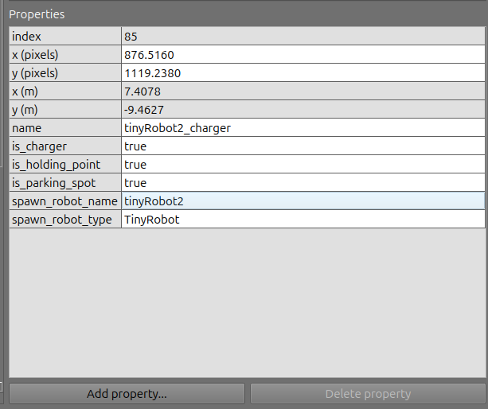
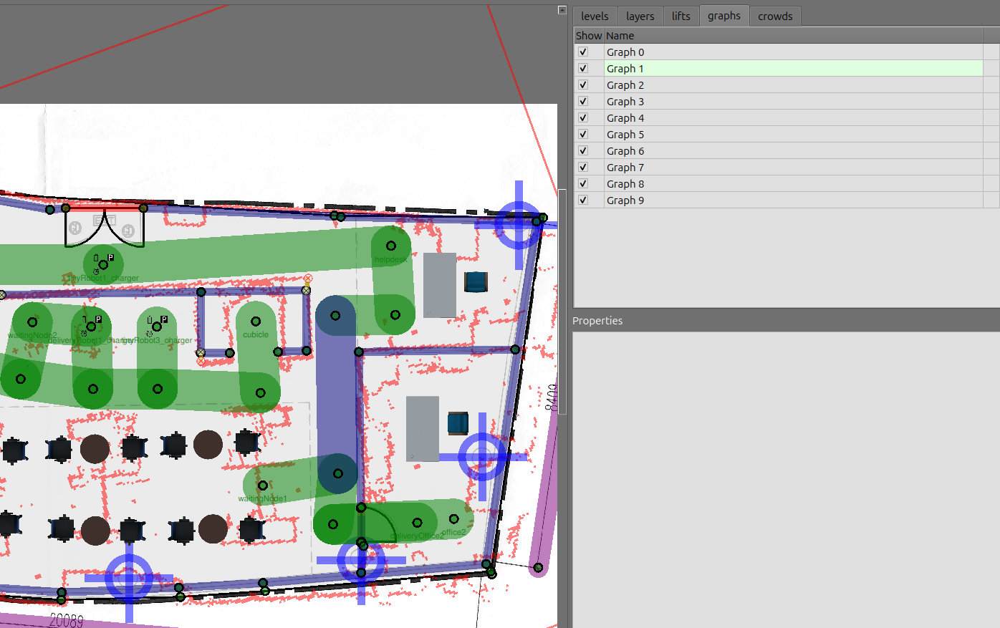

Open-RMF-Custom-Map
Preparing the custom map workspace folder
We highly recommend you to create a new workspace without any other package. Otherwise, if you reuse the same workspace
rmf_wsyou used to install the Open-RMF from source, it will take much more time to build, clean, and rebuild this custom map example if needed.
Create a RMF ROS 2 workspace directory:
mkdir -p rmf_ws_custom_map/src
Change to the src folder:
cd rmf_ws_custom_map/src
Clone the Open-RMF demos repository in the workspace src folder:
git clone https://github.com/open-rmf/rmf_demos.git
Change to the jazzy branch (this branch is more stable than the main branch for the ROS 2 jazzy):
cd rmf_demos
git checkout jazzy
Change back to the workspace folder, check for missing dependencies:
cd ~/rmf_ws_custom_map
rosdep install -i --from-path src --rosdistro jazzy -y
Create a python virtual environment with system wide packages and activate it:
virtualenv --system-site-packages venv_custom_maps
. venv_custom_maps/bin/activate
Install Python cmake in the virtualenv:
pip install cmake
Source your ROS 2 installation and build the workspace:
source /opt/ros/jazzy/setup.bash
colcon build
If the colcon build result in any packages not being built correctly, run it a second time. After the second time, all packages will probably be built, not sure why.
Let us check if the build worked by running a demo example. Source your open-rmf installation (that you installed from source), source the custom map workspace, and run the demo. Follow exactly this order of source commands:
# source the open-rmf installation from source
source ~/rmf_ws/install/setup.bash
# Source the custom_map workspace
source ~/rmf_ws_custom_map/install/setup.bash
# Run the office demo
ros2 launch rmf_demos_gz office.launch.xml
The RViz window should open quickly, but the Gazebo Window may take a while depending on your computer specifications (CPU, GPU, and so on). If Gazebo does not open on the first try, close the RViz and kill the demo command on the terminal and run it again. Wait some time for the Gazebo to open.
Before closing the demo run from the last step, try running a task. Open a new terminal, source the ROS 2 installation, source the ~/rmf_ws installation, source the rmf_ws_custom_map and run the task command:
source /opt/ros/jazzy/setup.bash
source ~/rmf_ws/install/setup.bash
source ~/rmf_ws_custom_map/install/setup.bash
ros2 run rmf_demos_tasks dispatch_delivery -p pantry -ph coke_dispenser -d hardware_2 -dh coke_ingestor --use_sim_time
The robot 2 should go to the pantry, get a coke and deliver to the coke ingestor.
Changing the map
Create your map in the traffic-editor and copy the saved <your_map>.building.yaml to the ~/rmf_ws_custom_map/src/rmf_demos/rmf_demos_maps/maps/office/office.building.yamlwith the same name. Name it as office.building.yaml. Inside the office.building.yaml make sure the path to the office.png and to the office_scan.png is correct.
If you want, you can try with this map example of the custom office. Just move it to the ~/rmf_ws_custom_map/src/rmf_demos/rmf_demos_maps/maps/office/ directory.
Open a new terminal, source ROS 2 and source the workspace:
cd ~/rmf_ws_custom_map
source /opt/ros/jazzy/setup.bash
source install/setup.bash
Clean your workspace :
cd ~/rmf_ws_custom_map
rm -r install/ build/ log/
Build your workspace again and source it:
cd ~/rmf_ws_custom_map
colcon build
source install/setup.bash
If your build fails because of python cmake, then activate the virtual environment: . venv_custom_maps/bin/activate.
Now, when you run the office demo example, it will launch with your map:
ros2 launch rmf_demos_gz office.launch.xml
If you want to add robot nodes in the traffic editor, add the following properties to the node in the traffic editor by clicking on the node and clicking on Add property:

Tips on the custom map
Changes to the workspace
For every change you make on any file, you need to rebuild your workspace:
cd ~/rmf_ws_custom_map
colcon build
source install/setup.bash
If after the colcon build the changes you made did not work, you can try cleaning the workspace and building again:
rm -r log/ build/ install/
cd ~/rmf_ws_custom_map
colcon build
source install/setup.bash
No repeated node names in the map
Always make sure no two nodes have the same name. Otherwise, the lanes will not be loaded properly.
Robot _config files
For every robot on the scene, there must be a config for it. To do this modify the config file accordingly at ~/rmf_ws_custom_map/src/rmf_demos/rmf_demos/config/office.
To add new robots to the map, you need to add a config file for the robot at ~/rmf_ws_custom_map/src/rmf_demos/rmf_demos/config/office. For example, if you want to add a deliveryRobot to the office demo, copy the deliveryRobot_config.yaml from the hotel example located at /home/marcos/rmf_ws_custom_map/src/rmf_demos/rmf_demos/config/hotel/deliveryRobot_config.yaml. Just make sure that all the robot names inside the deliveryRobot_config.yaml are the same from the robot you add/spawn in your map nodes created in the traffic-editor. Check the name, the robots and their subproperties (for example, the charger in the case of the delivery robot). All the name related things should mirror the robot node from the map .building.yaml created with the traffic editor.
In this example, you may need to update the tinyRobot_config.yaml by adding the tinyRobot2 and the tinyRobot3. You can copy the model that is already in the tinyRobot_config.yaml for the tinyRobot1.
If you do not want to open the traffic editor to check the properties of each robot node, they are also available in the .building.yaml file. For instance, check the following lines inside the office.building.yaml:
...
- [1549.2, 468.44600000000003, 0, tinyRobot1_charger, {is_charger: [4, true], is_holding_point: [4, true], is_parking_spot: [4, true], spawn_robot_name: [1, tinyRobot1], spawn_robot_type: [1, TinyRobot]}]
- [895.73500000000001, 251.386, 0, elevator]
- [1992.46, 632.95500000000004, 0, cubicle]
- [1704.5699999999999, 648.94899999999996, 0, tinyRobot3_charger, {is_charger: [4, true], is_holding_point: [4, true], is_parking_spot: [4, true], spawn_robot_name: [1, tinyRobot3], spawn_robot_type: [1, TinyRobot]}]
- [747.221, 614.67600000000004, 0, office1]
- [2385.4520000000002, 413.61000000000001, 0, helpdesk]
- [876.51599999999996, 1119.2380000000001, 0, tinyRobot2_charger, {is_charger: [4, true], is_holding_point: [4, true], is_parking_spot: [4, true], spawn_robot_name: [1, tinyRobot2], spawn_robot_type: [1, TinyRobot]}]
- [1513.9860000000001, 648.31700000000001, 0, deliveryRobot1_charger, {is_charger: [4, true], is_holding_point: [4, true], is_parking_spot: [4, true], spawn_robot_name: [1, deliveryRobot1], spawn_robot_type: [1, DeliveryRobot]}]
...
Last, after you have all the robot nodes properties, you can change the _config.yaml files of each robot. For instance, the tinyRobot_config.yaml will have the following lines modified (note the names are exactly the same from the properties above):
...
robots:
tinyRobot1:
charger: "tinyRobot1_charger"
responsive_wait: False # Should responsive wait be on/off for this specific robot? Overrides the fleet-wide setting.
tinyRobot2:
charger: "tinyRobot2_charger"
# No mention of responsive_wait means the fleet-wide setting will be used
tinyRobot3:
charger: "tinyRobot3_charger"
...
and the deliveryRobot_config.yaml will have the following modifications:
...
robots:
deliveryRobot1:
charger: "deliveryRobot1_charger"
...
Add different fleets of robots
To add a new fleet with different robot types, call the new fleet in the file ~/rmf_ws_custom_map/src/rmf_demos/rmf_demos/launch/office.launch.xml (we are using the office map as the example modified custom map). Do not forget to change the nav_graphs/<fleet_number>.yaml to the lane of the new fleet. Note that the Open-RMF does not solve conflicts between two different lanes. Thus, if you have different lanes, make sure they will not cause conflicts or collisions.
...
<!-- TinyRobot fleet adapter -->
<group>
<include file="$(find-pkg-share rmf_demos_fleet_adapter)/launch/fleet_adapter.launch.xml">
<arg name="use_sim_time" value="$(var use_sim_time)"/>
<arg name="nav_graph_file" value="$(find-pkg-share rmf_demos_maps)/maps/office/nav_graphs/0.yaml" />
<arg name="config_file" value="$(find-pkg-share rmf_demos)/config/office/tinyRobot_config.yaml"/>
</include>
</group>
<!-- ADDING A FLEET OF DeliveryRobot -->
<!-- DeliveryRobot fleet adapter -->
<group>
<include file="$(find-pkg-share rmf_demos_fleet_adapter)/launch/fleet_adapter.launch.xml">
<arg name="use_sim_time" value="$(var use_sim_time)"/>
<arg name="nav_graph_file" value="$(find-pkg-share rmf_demos_maps)/maps/office/nav_graphs/0.yaml" />
<arg name="config_file" value="$(find-pkg-share rmf_demos)/config/office/deliveryRobot_config.yaml"/>
</include>
</group>
Using different lanes on the map
If you want to add the fleet on a new lane/route different, you need to change the lane graph in the traffic-editor. To do this, click on the lane you want to change and press a number from 0 to 10. It should change the color of the lane graph. Each graph correspond to a number and a color. The blue lane is on graph 1. When calling the fleet adapter on the .launch.xml just change the nav_graphs to the layer you want (in this case 1.yaml):

Issues
Some issues may happen. Here we leave some solutions.
The order of the source commands matters
When sourcing multiple workspaces, the last source command will take effect over the other ones. Thus, if follow the exact order of source commands the tutorial tells you. For instance, when testing the custom map office, if you source first the rmf_ws_custom_map/install/setup.bash and then the ~/rmf_ws/install/setup.bash, the map that will be loaded is the one in the rmf_ws. Therefore, to run the custom map you need to source first the ~/rmf_ws and last the ~/rmf_ws_custom_map.
Last, to prevent any conflicts, always open a new terminal if anything stops working. Every time you open a new terminal, it opens without any previous source commands and you can start fresh again.
Adding new robots to the map
The traffic-editor should add everything you modify on the editor to the .building.yaml file. However, we had this issue on the first time the nodes for the new robots were added.
To add the robots to the map, you need to add them in the crowd_sim > agent_groups > agents_names property of the .building.yaml file manually in the agent_groups > agents_name > [add_names_here_separated_by_commas]. Also, change the agents_number to the number of agents you inserted in the list:
crowd_sim:
agent_groups:
# Add the agents_name to the list of agents_name
- {agents_name: [tinyRobot1, tinyRobot2, <ADD_MORE_ROBOTS_HERE>], agents_number: <NUMBER_OF_ROBOTS_USED>, group_id: 0, profile_selector: external_agent, state_selector: external_static, x: 0, y: 0}
After changing things on the office.building.yaml, rebuild your workspace with colcon build and launch the map:
ros2 launch rmf_demos_gz office.launch.xml
Open a new terminal and send the tasks (this an example, you need to adapt it to your map):
ros2 run rmf_demos_tasks dispatch_patrol -p cubicle office2 -n 3 --use_sim_time
ros2 run rmf_demos_tasks dispatch_patrol -p deliveryOffice2 -n 3 --use_sim_time